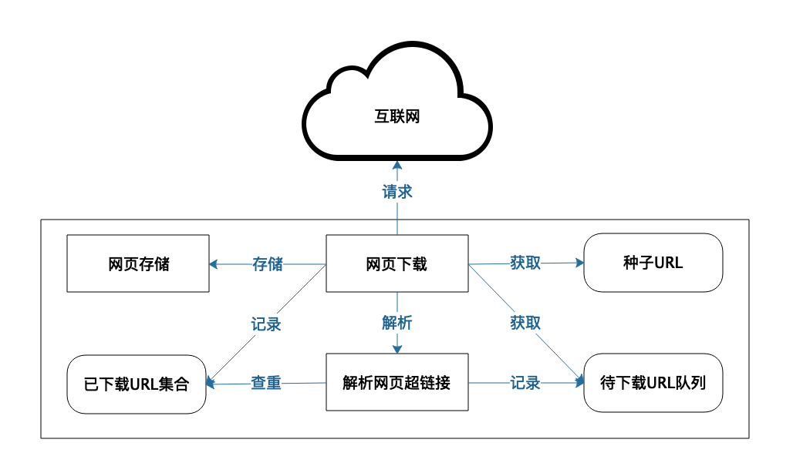
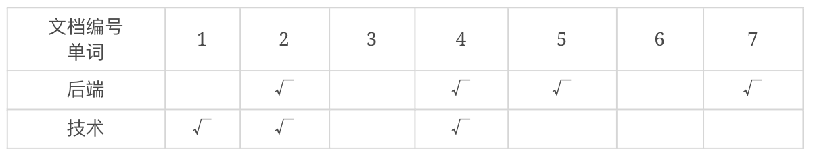
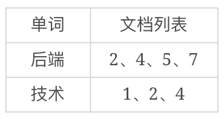
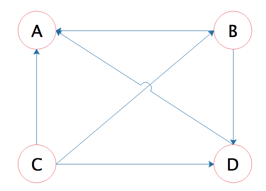
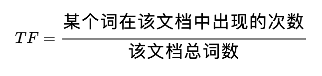
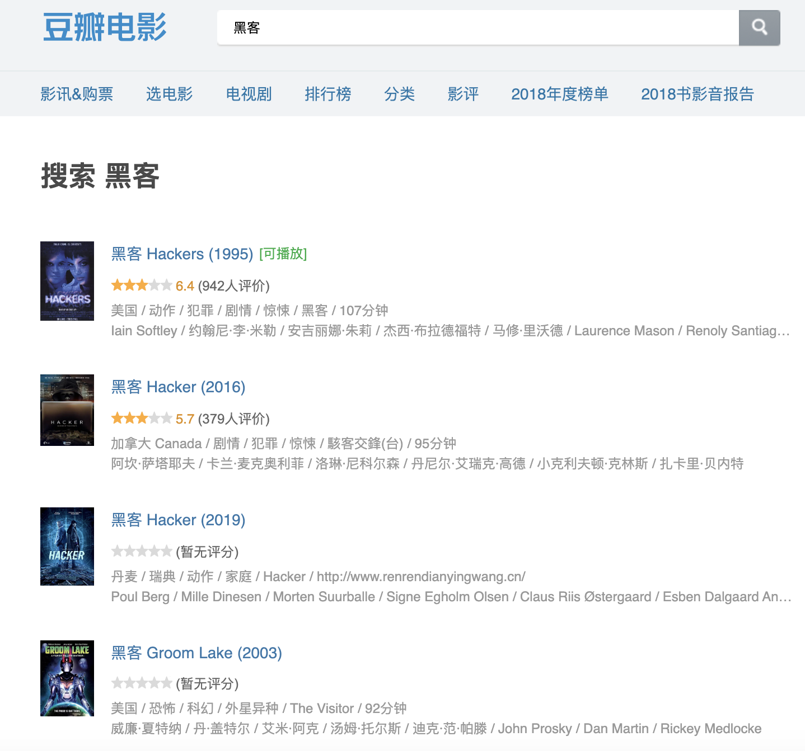

- 00 开篇词 掌握软件开发技术的第一性原理.md
- 01 程序运行原理：程序是如何运行又是如何崩溃的？.md
- 02 数据结构原理：Hash表的时间复杂度为什么是O(1)？.md
- 03 Java虚拟机原理：JVM为什么被称为机器（machine）？.md
- 04 网络编程原理：一个字符的互联网之旅.md
- 05 文件系统原理：如何用1分钟遍历一个100TB的文件？.md
- 06 数据库原理：为什么PrepareStatement性能更好更安全？.md
- 07 答疑 Java Web程序的运行时环境到底是怎样的？.md
- 07 编程语言原理：面向对象编程是编程的终极形态吗？.md
- 08 软件设计的方法论：软件为什么要建模？.md
- 09 软件设计实践：如何使用UML完成一个设计文档？.md
- 10 软件设计的目的：糟糕的程序员比优秀的程序员差在哪里？.md
- 11 软件设计的开闭原则：如何不修改代码却能实现需求变更？.md
- 12 软件设计的依赖倒置原则：如何不依赖代码却可以复用它的功能？.md
- 13 软件设计的里氏替换原则：正方形可以继承长方形吗？.md
- 14 软件设计的单一职责原则：为什么说一个类文件打开最好不要超过一屏？.md
- 15 软件设计的接口隔离原则：如何对类的调用者隐藏类的公有方法？.md
- 16 设计模式基础：不会灵活应用设计模式，你就没有掌握面向对象编程.md
- 17 设计模式应用：编程框架中的设计模式.md
- 18 反应式编程框架设计：如何使程序调用不阻塞等待，立即响应？.md
- 19 组件设计原则：组件的边界在哪里？.md
- 20 答疑 对于设计模式而言，场景到底有多重要？.md
- 20 领域驱动设计：35岁的程序员应该写什么样的代码？.md
- 21 分布式架构：如何应对高并发的用户请求.md
- 22 缓存架构：如何减少不必要的计算？.md
- 23 异步架构：如何避免互相依赖的系统间耦合？.md
- 24 负载均衡架构：如何用10行代码实现一个负载均衡服务？.md
- 25 数据存储架构：如何改善系统的数据存储能力？.md
- 26 搜索引擎架构：如何瞬间完成海量数据检索？.md
- 27 微服务架构：微服务究竟是灵丹还是毒药？.md
- 28 高性能架构：除了代码，你还可以在哪些地方优化性能？.md
- 29 高可用架构：我们为什么感觉不到淘宝应用升级时的停机？.md
- 30 安全性架构：为什么说用户密码泄漏是程序员的锅？.md
- 31 大数据架构：大数据技术架构的思想和原理是什么？.md
- 32 AI与物联网架构：从智能引擎到物联网平台.md
- 33 区块链技术架构：区块链到底能做什么？.md
- 33 答疑 互联网需要解决的技术问题是什么？.md
- 34 技术修炼之道：同样工作十几年，为什么有的人成为大厂架构师，有的人失业？.md
- 35 技术进阶之道：你和这个星球最顶级的程序员差几个等级？.md
- 36 技术落地之道：你真的知道自己要解决的问题是什么吗？.md
- 37 技术沟通之道：如何解决问题？.md
- 38 技术管理之道：你真的要转管理吗？.md
- 38 答疑 工作中的交往和沟通，都有哪些小技巧呢？.md
- 加餐 软件设计文档示例模板.md
- 结束语 期待未来的你，成为优秀的软件架构师.md
26 搜索引擎架构：如何瞬间完成海量数据检索？
我们在使用搜索引擎的时候，搜索结果页面会展示搜索到的结果数目以及花费时间。比如用Google搜索中文“后端技术”这个词，会显示找到约6.7亿条结果，用时0.45秒。
我们知道Google收录了全世界几乎所有的公开网页，这是一个非常庞大的数目，那么Google是如何做到在如此短的时间内完成了如此庞大的数据搜索呢？
搜索引擎倒排索引
数据的搜索与查找技术是计算机软件的核心算法，这方面已有非常多的技术和实践。而对于搜索引擎来说，要对海量文档进行快速内容检索，主要使用的是倒排索引技术。
像Google这样一个互联网搜索引擎，首先需要通过网络爬虫获取全球的公开网页。那么搜索引擎如何知道全世界的网页都在哪里呢？
事实上，互联网一方面是将全世界的人和网络应用联系起来，另一方面，也将全世界的网页通过超链接联系起来，几乎每个网页都包含了一些其他网页的超链接，这些超链接互相链接，就让全世界的互联网构成了一个大的网络。所以，搜索引擎只需要解析这些网页，得到里面的超链接，然后继续下载这些超链接的网页，继续解析，这样就可以得到全世界的网页了。
这个过程具体是这样的。首先选择一些种子URL，然后通过爬虫将这些URL对应的页面爬下来。其实，所谓的爬虫，就是发送URL请求，下载相应的HTML页面，然后将这些Web页面存储在自己的服务器上，并解析这些页面的HTML内容，当解析到网页里超链接URL的时候，再检查这个超链接是否已经在前面爬取过了，如果没有，就把这个超链接放到一个队列中，后面会请求这个URL，得到对应的HTML页面并解析其包含的超链接……如此不断重复，就可以将全世界的Web页面存储到自己的服务器中。
爬虫系统架构如下：

得到了全部网页以后，需要对每个网页进行编号，得到全部网页的文档集合。然后再解析每个页面，提取文档里的每个单词，如果是英文，那么每个单词都用空格分隔，比较容易；如果是中文，需要使用中文分词器才能提取到每个单词，比如“后端技术”，使用中文分词器得到的就是“后端”、“技术”两个词。
然后考察每个词在哪些文档中出现，比如“后端”在文档2、4、5、7中出现，“技术”在文档1、2、4中出现，这样我们就可以得到一个单词、文档矩阵：

把这个单词、文档矩阵按照单词→文档列表的方式组织起来，就是倒排索引了：

我们这个例子中只有2个单词、7个文档。事实上，Google数以万亿的网页就是这样通过倒排索引组织起来的，网页数量虽然不可思议地庞大，但是单词数却是比较有限的，所以，整个倒排索引的大小相比网页数量要小得多。Google将每个单词的文档列表存储在硬盘中，而对于文档数量没那么大的应用而言，文档列表也可以存储在内存中。每个单词记录下硬盘或者内存中的文档列表地址，搜索的时候，只要搜索到单词，就可以快速得到文档地址列表。根据列表中的文档编号，展示对应的文档信息，就完成了海量数据的快速检索。
而搜索单词的时候，我们可以将所有单词构成一个Hash表，根据搜索词直接查找Hash表，就可以得到单词了。如果搜索词是“后端”，那么快速得到文档列表，有4个；如果搜索词是“后端技术”，那么首先需要对搜索词进行分词，得到“后端”、“技术”两个搜索单词，分别得到这两个单词的文档列表，然后将这两个文档列表求交集，也很快可以得到搜索结果，有两个。
虽然搜索引擎利用倒排索引已经可以很快得到搜索结果了，但是实践中，搜索引擎应用还会使用缓存对搜索进行加速，将整个搜索词对应的搜索结果直接放入缓存，以减少倒排索引的访问压力，以及不必要的集合计算。
搜索引擎结果排序
有了倒排索引，虽然可以快速得到搜索结果了，但是，如果搜索结果比较多，哪些文档应该优先展示给用户呢？我们使用Google搜索“后端技术”的时候，虽然Google告诉我们，搜索结果有6.7亿个，但是我们通常在搜索结果列表的头几个，就能找到想要的结果，而列表越往后，结果也越不是我们想要的。Google是如何知道我们想要的结果是哪些呢？这样的搜索结果展示显然是排过序的，那搜索引擎的结果是如何排序的呢？
事实上，Google使用了一种叫PageRank的算法，计算每个网页的权重，搜索结果就按照权重排序，权重高的网页在最终结果显示的时候排在前面。为什么权重高的网页正好就是用户想要看到的呢？我们先看下这个网页权重算法，即PageRank算法。
PageRank算法认为，如果一个网页里包含了某个网页的超链接，那么就表示该网页认可某个网页，或者说，该网页给某个网页投了一票。如下A、B、C、D四个网页，箭头指向的方向就是表示超链接的方向，B的箭头指向A，表示B网页包含A网页的超链接，也就是B网页给A网页投了一票。

开始的时候，所有网页都初始化权重值为1，然后根据超链接关系计算新的权重。比如B页面包含了A和D两个页面的超链接，那么自己的权重1就被分成两个1/2分别投给A和D。而A页面的超链接包含在B、C、D三个页面中，那么A页面新的权重值就是这个三个页面投给它的权重值之和：1/2 + 1⁄3 + 1 = 11/6。
经过一轮PageRank计算后，每个页面都有了新的权重，然后基于这个新的权重再继续一轮计算，直到所有的网页权重稳定下来，就得到最终所有网页的权重，即最终的PageRank值。
通常，在一个网页中包含了另一个网页，是对另一个网页的认可，认为这个网页质量高，值得推荐。而被重要网页推荐的网页也应该是重要的，PageRank算法就是对这一设想的实现，PageRank值代表了一个网页受到的推荐程度，越受推荐越重要，就越是用户想看到的。基于每个网页的PageRank值对倒排索引中的文档列表进行排序，排在前面的文档通常也是用户想要看到的文档。
PageRank算法对于互联网网页排序效果很好，但是，对于那些用户生成内容（UGC）的网站而言，比如豆瓣、知乎，或者我们的InfoQ，如果想在这些网站内部进行搜索，PageRank算法就没什么效果了。因为豆瓣的影评，知乎的回答，InfoQ的技术文章之间很少通过超链接进行推荐。
那么，要相对这些站内搜索引擎的结果进行排序，就需要利用其它一些信息以及算法，比如可以利用文章获得的点赞数进行排序，点赞越多，表示越获得其它用户的认可，越应该在搜索结果中排在前面。利用点赞数排序，或者PageRank排序，都是利用内容中存在的推荐信息排序，而这些推荐信息来自于广大参与其中的人，因此这些算法实现也被称作“集体智慧编程”。
除了用点赞数进行排序，有时候，我们更期望搜索结果按照内容和搜索词的相关性进行排序，比如我在infoq.cn搜索PageRank，我其实并不想看那些点赞很多，但是只提到一点点PageRank的文章，而想看主要讲PageRank算法的文章。
这种情况可以使用词频TF进行排序，词频表示某个词在该文档中出现的频繁程度，也代表了这个词和该文档的相关程度。词频公式如下：

使用豆瓣电影进行搜索的时候，豆瓣的搜索结果主要是电影名中包含了搜索词的电影，比如我们搜索“黑客”这个词，豆瓣的搜索结果列表就是以“黑客”为电影名的电影。

但是，如果我想搜索电影内容是关于黑客的，但是标题里可能没有“黑客”两个字的电影，豆瓣的搜索就无能为力了。几年前，我自己专门写了一个电影搜索引擎，利用豆瓣的影评内容建立倒排索引，利用词频算法进行排序，搜索的结果如下，这个结果更符合我对电影搜索引擎的期待。
如果你对这个搜索引擎有兴趣，源代码的地址在这里：https://github.com/itisaid/sokeeper
小结
事实上，搜索引擎技术不只是用在Google这样的搜索引擎互联网应用中，对于大多数应用而言，如果想要对稍具规模的数据进行快速检索，都需要使用搜索引擎技术。而对于淘宝这样的平台型应用，搜索引擎技术甚至驱动其核心商业模式。一方面，淘宝海量的商品需要通过搜索引擎完成查找，另一方面，淘宝的主要盈利来自于搜索引擎排名。所以，本质上，淘宝的核心技术和盈利模式跟百度、Google都是一样的。
思考题
文中我们讨论了PageRank算法，如果只有几百个网页，那么写一个程序计算每个网页PageRank就可以了，但是如果是Google这样万亿级的网页，网页之间的超链接关系数量更加庞大，而PageRank算法又需要多轮计算，如何才能较快地计算出所有网页的PageRank值呢？
欢迎你在评论区写下你的思考，也欢迎把这篇文章分享给你的朋友或者同事，一起交流一下。
© 2019 - 2023 Liangliang Lee. Powered by gin and hexo-theme-book.